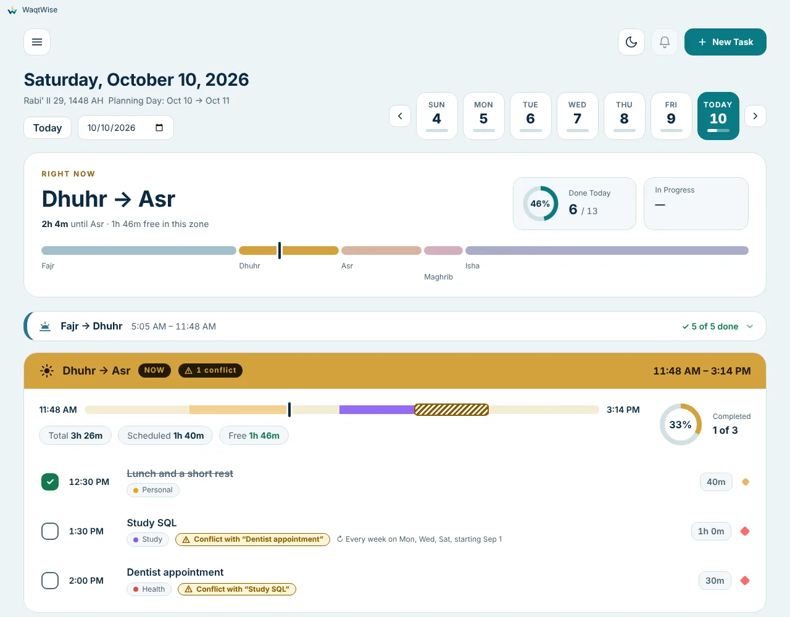
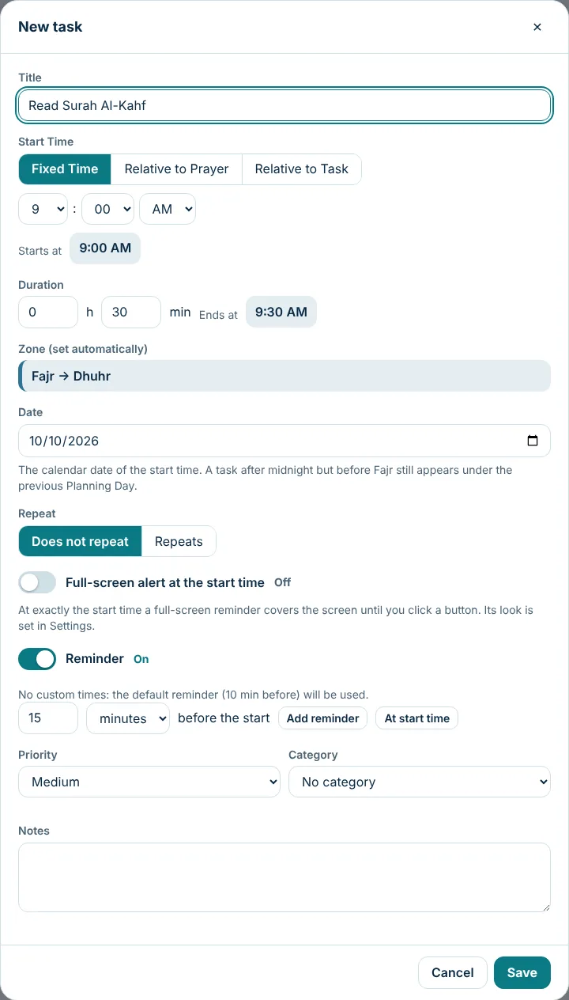
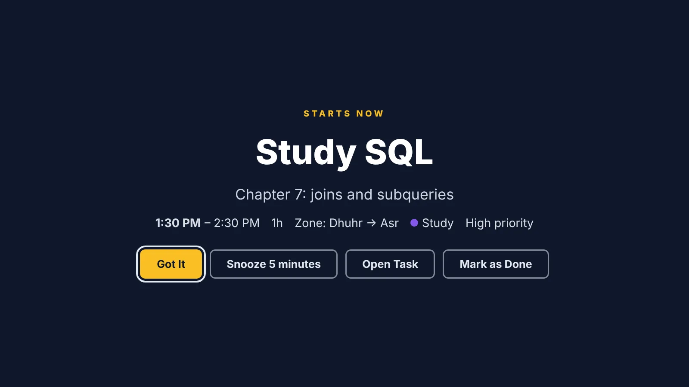
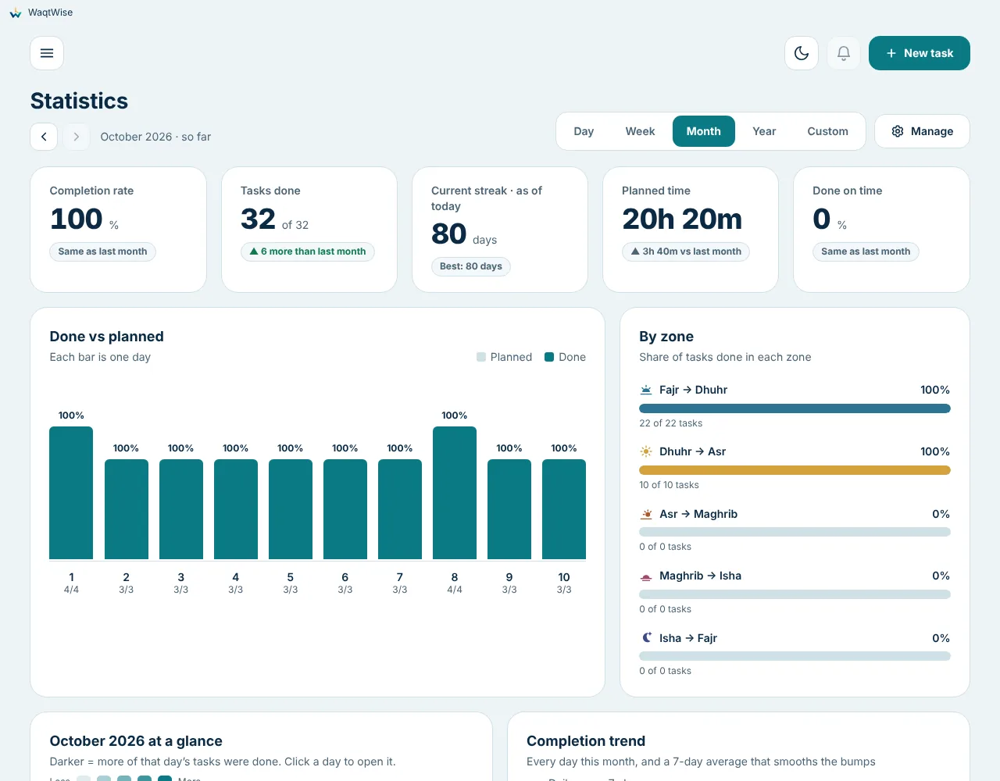
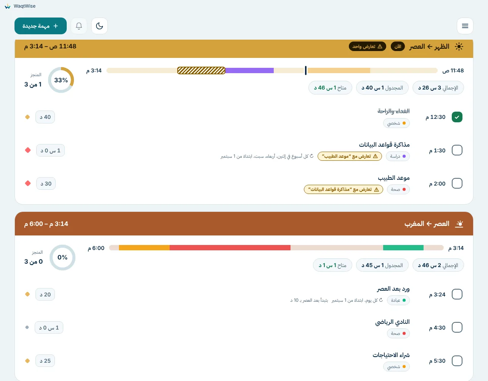
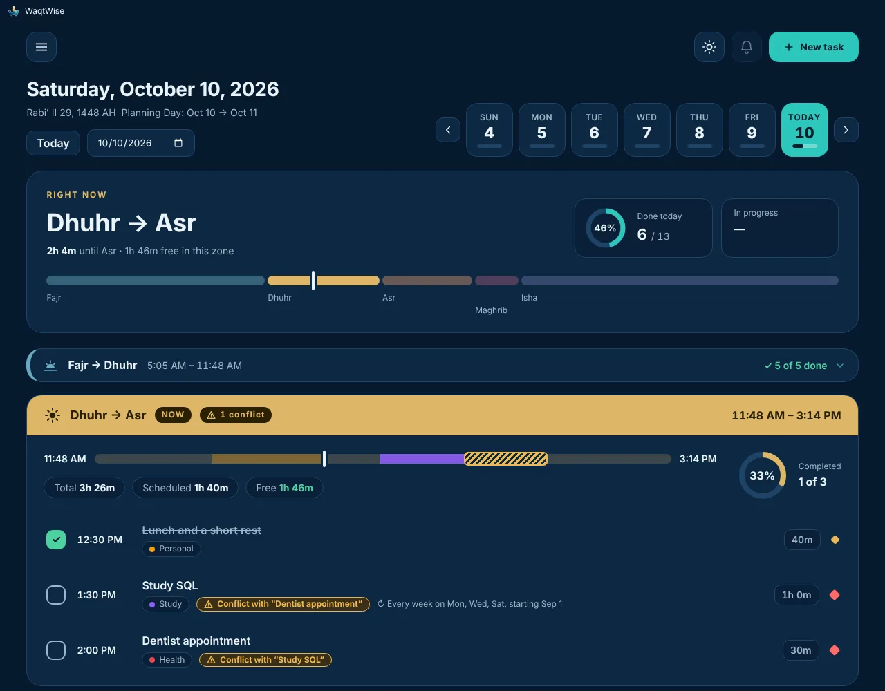
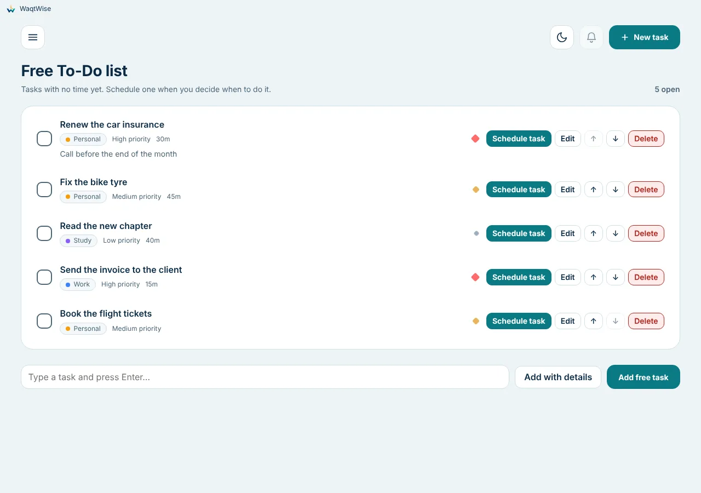

WaqtWise
Make every waqt count, wisely.
A free day planner for Windows that divides your day into five zones by the prayer times.

Windows may say "Windows protected your PC" because the installer is new and not signed yet. Click More info → Run anyway. Why this happens, and how to check the file.
Plan around prayer, not around the clock
Your day is split by Fajr, Dhuhr, Asr, Maghrib and Isha. Add a task and it lands in the right zone by itself.
- Fajr → Dhuhr
- Dhuhr → Asr
- Asr → Maghrib
- Maghrib → Isha
- Isha → Fajr
Smart start times
A fixed time, "10 minutes after Asr", or "15 minutes after the end of another task".
Flexible repeats
Daily, weekly, monthly (first Friday, last working day…) and yearly. Change one, the following, or all.
Reminders you can't miss
Notifications, and full-screen alerts with Snooze, Open task and Mark as Done, and a random note each time.
Free To-Do list
Keep tasks with no time yet and schedule them when you decide.
Statistics
Completion, streaks, done on time, lateness, calendar heat map, by zone and category.
Any country, any city
About 30,000 cities in 209 countries, 12 calculation methods, manual minute adjustments and the Hijri date.
English and Arabic
Full right-to-left Arabic, light and dark themes, keyboard friendly.
Private by design
Works offline. No account, no tracking, no network. Everything stays on your computer.
See it
Real screenshots from the app, with example data.












Install
- Download WaqtWise-Setup-1.1.0.exe from the latest release (direct download).
- Run it. If you see "Windows protected your PC", click More info, then Run anyway.
- Click Next, Install, Finish. No administrator rights are needed.
- Choose your country and city and start planning.
Updates: the app never connects to the internet, so it does not update itself. Download and run the newer installer; your data is kept.
Private by design
WaqtWise does not connect to the internet. Your tasks, settings and statistics are stored only on your computer
(%APPDATA%\WaqtWise). No account, no analytics, no ads. Read the privacy page.
Questions
Is it really free?
Yes. It is free software under the GNU GPL v3 or later; you can read, share and change the source.
Why is the installer not signed?
A code-signing certificate costs money and trust takes time. We are applying for free signing for open-source projects (SignPath Foundation). Until then Windows shows a warning; see the explanation and the code signing policy.
Does it need internet?
No. Prayer times are calculated on your computer. The app never connects to the internet.
Where is my data?
Only on your computer. You can export a backup file, import it on another PC, and the app keeps daily backups for you.
My city is not listed.
Choose a larger town nearby, or use Custom city and type latitude, longitude and time zone.
Prayer times differ by a few minutes from my mosque.
Choose another calculation method, or add or subtract minutes for that prayer in Settings.
Does it work on macOS, Linux, Android or iPhone?
Not at the moment. WaqtWise is for Windows 10 and 11.
How can I help or report a problem?
Open an issue. Corrections to the Arabic wording and testing on your PC are very welcome. See Contributing.
Code signing policy
The installer is not signed yet. We are applying to the SignPath Foundation for free code signing. When approved, releases will carry: Free code signing provided by SignPath.io, certificate by SignPath Foundation. Only installers built by this project's public GitHub workflow will be signed, and every signing request is approved manually by a maintainer. Read the policy.